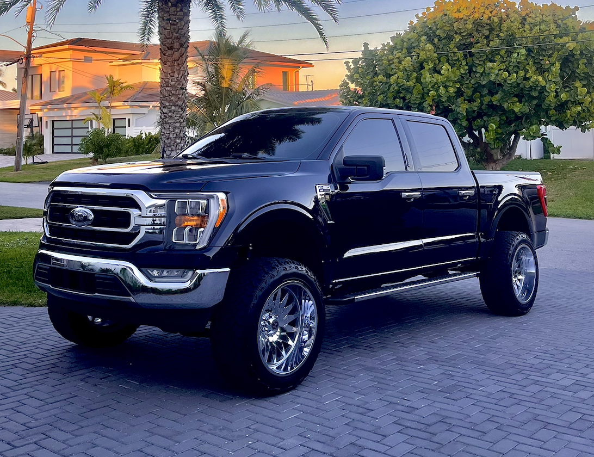

Browse by trim
See how the lineup changes from simple work-truck value to premium comfort and full off-road presence.
View trimsTrimTracker is a darker, more aggressive F-150 guide built around truck personality, capability, and style. Instead of just dumping specs on one page, it breaks the lineup into clearer pages for trims, engines, comparisons, and buyer-focused recommendations.

Different pages answer different questions, so users can get to what matters faster.
See how the lineup changes from simple work-truck value to premium comfort and full off-road presence.
View trims
Figure out whether your best match is an easy daily-driver setup, a V8 feel, hybrid power, or a harder-hitting performance option.
View engines
Jump to a side-by-side table and an interactive trim slider to narrow down the best truck faster.
Open toolsThis version leans into a darker performance-inspired look, stronger contrast, more image-heavy sections, and a navigation flow that feels closer to a real enthusiast site.
Find the part of the lineup that matches your budget and personality.
See what type of powertrain feel matches the way the truck will actually be used.
Use the table and slider tool to narrow the lineup down to one or two final choices.